Cómo vectorizar una imagen
Un libro con dibujos para aprender a convertir píxeles en curvas, usando como ejemplo lo que cambió entre los dos motores de unpixel. Todas las imágenes marcadas como «Ejecución real» salen de correr el código de este repositorio sobre battery/.
Capítulos
Lo que cambió, en una página
Vectorizar es decidir dos cosas: qué colores hay y dónde están las fronteras entre ellos. Los dos motores difieren en ambas. Por eso este libro va de cómo se toman esas dos decisiones.
El motor clásico sigue siendo el predeterminado. El nuevo se pide con --engine new.
| Decisión | Motor clásico (segment.py, vectorize.py) | Motor nuevo (engine/) |
|---|---|---|
| Tipo de imagen | No distingue. Rechaza lo que tiene muy poco color plano. | Distingue pixel, hard y soft. Nunca rechaza. |
| Resolución de trabajo | Amplía hasta unos 6400 px de lado (máx. ×4), desenfoca y enfoca. | Tamaño original y mapa de clases a ×2. Sin enfocar. |
| Espacio de color | Lab con distancia CIE76. | Lab con croma comprimido (perceptual). |
| Paleta | Picos de histograma, grupos y regiones; los colores pequeños se funden en otros. | Punto más lejano sobre un histograma, con reservas para brillos y oscuros saturados. |
| Asignación | Por región conexa: toda la región recibe un color. | Por píxel, y los píxeles de transición solo eligen colores sólidos cercanos. |
| Contornos | potrace, una capa cada vez. Las capas se solapan para tapar huecos. | Mapa plano: cada pared es una curva compartida por sus dos lados. |
| Evitar costuras | Solape de 2 px de la imagen original bajo las capas superiores. | Rellenos exactos, y un trazo fino del color inferior sobre cada pared. |
1. Ráster y vector
Un ráster es una rejilla: una lista de cuadrados, cada uno con su color. Un vector es una descripción: «rellena de este color la zona limitada por estas curvas».
Al ampliar, se nota la diferencia. El ráster muestra sus cuadrados. El vector se vuelve a calcular a cualquier tamaño.


Esos grises son el antialiasing: el píxel del borde mezcla los dos colores vecinos. Es el primer enemigo de este oficio, porque hay miles de colores que el autor nunca pintó.
Por qué colores planos
Esta imagen del ajolote tiene 89.980 colores distintos. El resultado del motor nuevo tiene 16. Cada uno es una capa que se puede editar, recortar o imprimir por separado.


Por qué importan los contornos
En pantalla, un contorno regular y uno irregular pueden parecer iguales. Para un plotter o un vinilo, no. La máquina sigue la línea. Cada nodo de más es un titubeo, y cada solape es una pasada donde no debía cortar.


--layers cutout) con relleno y solo con líneas. Fíjate en que una pared aparece como una sola línea aunque el archivo la escribe dos veces, una por cada región: el capítulo 8 vuelve sobre esto.2. Los dos caminos completos
Primero, el mapa. Los capítulos siguientes recorren cada parada.
Clásico
- Ampliar hasta 6400 px, ×4 como máximo
_gauss_rgbdesenfoque 1,2 px de trabajo- Máscara
flatlejos de bordes _find_groupspicos de histograma, unidos si distan ≤ 20_add_unexplained_colorscolores de trazos finos- Enfoque base + 2 × (base − desenfoque)
_nearestcada píxel, a su grupo_split_mixed_regionsuna región con dos colores se parte- Fondo regiones del borde con su color
_cluster_regionsregiones a ≤ 8 son un color- Fundir colores menores de 0,5 % a ≤ 20; duplicados; tope 16
_dissolve_fringes_remove_specksal vecino más común_smooth_partitionsuaviza fronterasbuild_svgpotrace por capa, con solape
Nuevo
classifypixeltoma un atajo exactoperceptualLab comprimidobilateral,flatten_gradientsno enhardtransition_maskquién es mezclafind_backgroundinundación desde el bordebuild_palettedos pasadas; usahighlight_maskassignalcance 9; fondo, 3dissolve_fringessettle_colorscada color, mediana de lo suyorefine_doublemapa a ×2absorb_specks,dissolve_speckle,drop_floating_paleplanar.buildparedes y cruces_subpixel,find_cornerssmooth_chains,fit_chainswrite_svgrellenos y trazos trampa
Ahora el mismo recorrido con imágenes. La zona es siempre la misma, la cabeza del ajolote.

_gauss_rgb: copia a 4× y desenfocada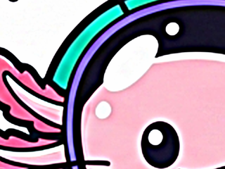
base + 2 × (base − blur)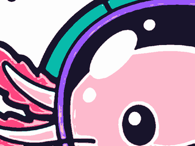
_nearest: grupos de color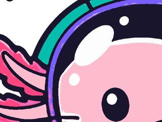
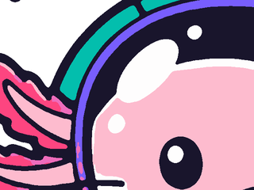
_smooth_partition
bilateral y flatten_gradients
transition_mask (magenta)assign en la paletadissolve_fringes y refine_double a 2×absorb_specks y compañía
3. Distinguir tipos de imagen
Un dibujo de píxeles quiere esquinas exactas. Un dibujo a mano quiere curvas suaves. Tratarlos igual estropea uno de los dos. El clásico los trata igual. El nuevo pregunta primero, con classify.
La pregunta se hace sobre la fuente intacta: de los saltos fuertes de color (ΔE sobre 15) entre vecinos, ¿cuántos ocurren de golpe, con color plano a ambos lados (ΔE bajo 3)?
synth-pixel
synth-hard: borde sin antialiasing
synth-aa: mismo dibujo con antialiasing
axolotl: dibujo real
| Imagen | Tipo | Bloque | hard_share | Colores |
|---|---|---|---|---|
synth-pixel | pixel | 16 | 1,0 | 6 |
synth-hard | hard | 1 | 0,997 | 6 |
synth-aa | soft | 1 | 0,001 | 636 |
axolotl | soft | 1 | 0,0 | 89.980 |
ghost | soft | 1 | 1,0 | 7.686 |
classify. Las tres primeras son sintéticas, de tools/engine/synth.py, porque en la batería no hay pixel art ni geometría dura: las nueve imágenes reales son soft (todas). ghost da hard_share 1 porque no tiene ningún salto fuerte, y queda en soft por sus muchos colores.Las reglas: pixel si hay rejilla (o la imagen es diminuta y con pocos colores); hard si los saltos son limpios y hay como mucho 4096 colores; soft en el resto.
Lo que cambia en la salida

synth-pixel, bloque de 16 px. El clásico la amplía, la suaviza y la pasa por potrace: las esquinas se redondean. El nuevo reconoce la rejilla, toma un píxel por bloque y escribe solo rectas: coincide con la fuente.
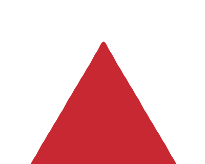
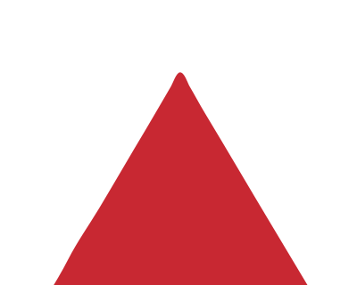
synth-hard, en escalera por no tener antialiasing. Los dos motores lo enderezan: aquí apenas hay diferencia.Rechazar o simplificar
¿Qué hacer con una imagen que no es un dibujo, como una foto o puro ruido? El clásico la rechaza: lanza UnsuitableImage si casi no encuentra color plano. El nuevo la simplifica.
Un resultado con más de 8.000 regiones se considera demasiado ocupado. segment_new desenfoca la imagen con un sigma de 2 px y vuelve a empezar; si no basta, 4, y luego 8, con el que se queda. Avisa de que lo ha hecho.


pipeline.run, que no reintenta (34.705 regiones, 21 colores, 11,8 s). Después, el CLI con --engine new (3,0 s, 300 MB). Regiones por intento: 34.705 → 121; se detiene con sigma 2. El aviso: «This image is very busy, like a photo or noise, so it was smoothed first to keep the result usable.». El clásico rechaza esta misma imagen: «almost no flat color areas found; this looks like a photo or a gradient».Con reintento se pierde el grano, y la rampa vuelve a leerse como bandas: lo que se gana es un archivo que se puede abrir. Con ruido puro de 1,5 megapíxeles, el CLI aquí tarda 47,7 s, con un pico de 2.285 MB y 3.493 KB. Según las pruebas de desarrollo de este cambio, no repetidas aquí, antes costaba 360 s, 25 GB y 294 MB.
El reintento solo está en el camino del CLI. Las imágenes de la batería no llegan al límite: la más ocupada tiene unas 1300 regiones, según el código.
4. Color
Lab, y por qué hay que deformarlo
Para decidir si dos colores son «el mismo», hay que medir distancias. En RGB esa distancia no se parece a lo que ve el ojo. Lab lo intenta: L es la luminosidad, a y b el tono y su intensidad. La distancia en línea recta se llama CIE76 o ΔE.
CIE76 tiene dos fallos conocidos. Exagera la diferencia entre colores muy saturados, y entre oscuros cuyo tinte nadie aprecia. Con él, un violeta se parte en dos y un contorno negro puede pedir varios negros.
La respuesta del motor nuevo es perceptual: comprime el croma (la intensidad del color) donde CIE76 lo exagera. Es exacta e invertible.
perceptual, medida en una rejilla. Eje horizontal: croma del color. Eje vertical: porcentaje que queda. Las líneas son tres luminosidades: en los oscuros (L = 10) casi todo el croma desaparece.| Par | ΔE en Lab | ΔE deformado |
|---|---|---|
| dos violetas saturados | 21,4 | 10,0 |
| dos negros tintados | 11,0 | 5,4 |
| dos rosas pálidos | 9,0 | 7,3 |
| dos marrones medios | 9,8 | 8,6 |
perceptual. Los violetas saturados y los negros bajan a la mitad. Los pares pálidos y medios cambian poco.¿Qué pasa si se apaga? Se puede probar: basta con cambiar las dos funciones por la identidad y volver a correr el motor.

perceptual
perceptualSin perceptual los violetas del ajolote son #9957FA, #7160E1, #BAAAF5 (17 colores en total). Con él, #875CEF, #B9A9F5 (16 colores).
| Imagen | Con: colores (oscuros L < 25) | Sin: colores (oscuros) |
|---|---|---|
axolotl | 16 (1) | 17 (1) |
diver | 20 (2) | 22 (1) |
leaves | 17 (2) | 19 (2) |
chef | 16 (1) | 16 (1) |
ghost | 8 (0) | 8 (0) |
watchmaker | 19 (2) | 18 (1) |
float | 19 (1) | 21 (2) |
sunset | 16 (0) | 19 (0) |
principito | 19 (3) | 17 (2) |
perceptual; la de abajo, sin él. Se confirma la partición del violeta. Los «tres negros» que menciona el código no se reproducen en esta batería: sin deformar nunca hay más de dos oscuros. Y en algunas imágenes apagarla reduce colores: el efecto no siempre va en la misma dirección.Por qué se pierden los colores pequeños
El ejemplo del propietario es el Principito: su piel, el brillo del vidrio y el brillo del suelo. Son poca área y mucho significado.
segment.py no hay k-means, sino picos de histograma y regiones. El k-means estaba en un prototipo local anterior, que no está en este repositorio. Abajo se comparan los tres, porque cada uno pierde colores de una forma distinta y las dos lecciones valen.K-means coloca K centros para minimizar la suma de distancias de todos los píxeles. Cada píxel pesa uno, así que un área grande pesa mucho. Si el cielo se reparte en dos centros, gana más que dedicándole uno a la piel. Los colores pequeños salen perdiendo aunque sean muy distintos.


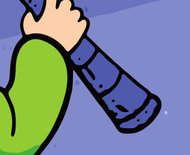
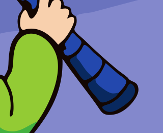

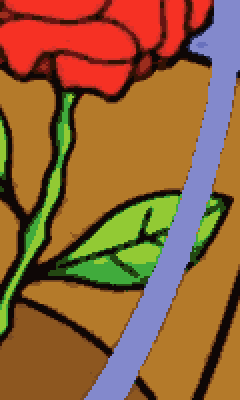
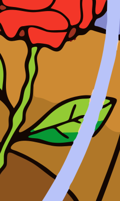

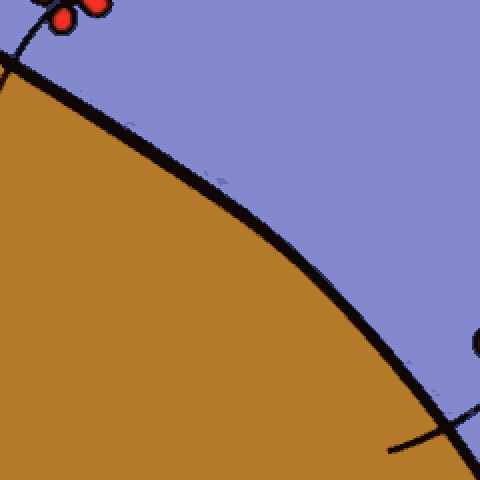
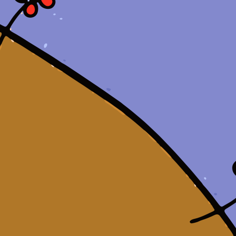

scipy, sobre la imagen con mediana 3×3 en Lab, la receta del prototipo) vuelve marrón la mano y funde el vidrio con el cielo. Clásico: conserva piel y vidrio, con restos blancos junto al vidrio, pero pierde el azul del catalejo y el brillo del suelo. Nuevo: conserva las tres.| Color en la fuente | K-means | Clásico | Nuevo |
|---|---|---|---|
| piel | 39,1 | 2,5 | 4,4 |
| vidrio | 22,6 | 2,7 | 1,6 |
| brillo del suelo | 8,4 | 10,0 | 0,0 |
| sombra | 5,2 | 21,8 | 4,8 |
| catalejo | 27,7 | 17,8 | 4,2 |
| zapato | 7,9 | 16,5 | 0,7 |
| azul marino | 8,8 | 31,4 | 4,9 |
| banda de cielo | 8,6 | 9,5 | 2,2 |
Cómo los pierde el motor clásico
Dos mecanismos, ambos verificables en su propia contabilidad.
Primero, los funde. Encontró 24 colores en esta imagen y entrega 16. Un color con menos del 0,5 % de área, a ΔE ≤ 20 de otro mayor, se considera una deriva de ese otro.
| Color encontrado | Área | Se convierte en | ΔE |
|---|---|---|---|
| #764319 | 0,205 % | #915A21 | 11,9 |
| #D3291E | 0,185 % | #FA3223 | 14,5 |
| #029934 | 0,181 % | #42B23E | 11,2 |
| #2048B1 | 0,165 % | #4F59AD | 16,1 |
| #740B11 | 0,164 % | #9E311D | 16,2 |
| #042965 | 0,035 % | #4F59AD | 24,7 |
| #8AD42F | 0,007 % | #93CB33 | 8,4 |
| #FADE06 | 0,004 % | #FECF0A | 10,5 |
segment en el Principito. Ahí están el azul del catalejo (#2048B1) y el rojo oscuro del zapato (#740B11). Los dos distan menos de 20 de otro color más grande, y eso basta.Segundo, colorea por regiones. Dos tonos a menos de 20 se clasifican juntos, y cada trozo conexo recibe un solo color. El suelo normal y su brillo distan 9,8. Son un único trozo.
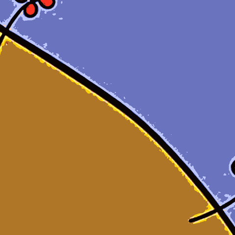
_nearestHay una salida prevista: _try_split parte una región si encuentra dos lados coherentes. Parte en dos, y aquí encuentra #B47A2A y #885221, es decir, suelo más brillo frente a sombra. La parte menor es un 4,7 % de la región, justo bajo el límite del 5 %, y renuncia. La sombra y el brillo se pierden por el mismo motivo.
Cómo los protege la paleta nueva
La idea es punto más lejano. Se toma el color más abundante. Luego, el más lejano a lo elegido. Y así hasta que nada quede lejos. La puntuación es distancia² × masa^0,3: el exponente tan bajo hace que el área solo desempate.


assign. Mira el salto de 1 a 2 (el cielo) y cómo aparecen el amarillo y el verde con muy pocas semillas.| Orden | Semilla | Por qué | Distancia | Masa |
|---|---|---|---|---|
| 1 | #B27A31 | mayor masa | — | — |
| 2 | #6A6DC2 | distancia × masa | 66,2 | 23,469 % |
| 3 | #0F0403 | distancia × masa | 59,3 | 2,444 % |
| 4 | #92D62B | distancia × masa | 44,9 | 1,735 % |
| 5 | #FDCA0E | distancia × masa | 30,8 | 3,037 % |
| 6 | #F82D28 | distancia × masa | 31,9 | 0,613 % |
| 7 | #BBC7FA | distancia × masa | 34,4 | 0,212 % |
| 8 | #770B12 | distancia × masa | 37,1 | 0,077 % |
| 9 | #F9D0AF | distancia × masa | 32,1 | 0,163 % |
| 10 | #1B8B3D | brillo | 34,4 | 0,014 % |
| 11 | #3DB93F | brillo | 18,0 | 0,215 % |
| 12 | #888FC8 | brillo | 15,3 | 0,565 % |
| 13 | #1F46B7 | oscuro saturado | 25,4 | 0,048 % |
| 14 | #A12F16 | oscuro saturado | 18,3 | 0,274 % |
| 15 | #8D521F | distancia × masa | 16,2 | 2,872 % |
| 16 | #D3932B | distancia × masa | 12,0 | 4,225 % |
| 17 | #4D56A8 | distancia × masa | 9,8 | 1,057 % |
| 18 | #5C391D | distancia × masa | 16,1 | 0,196 % |
| 19 | #052F68 | distancia × masa | 26,1 | 0,016 % |
build_palette, palette_log, en la segunda pasada. La masa es el porcentaje de píxeles alrededor de esa casilla. Fíjate en cuántas elecciones tienen una masa menor del 1 %, y en una sorpresa: el vidrio entra en el puesto 7 por pura distancia. Las tres plazas de «brillo» se las llevan aquí otros tonos.Tras elegir, unas pocas rondas de Lloyd (el paso de k-means) centran cada color sobre lo que explica. El problema de k-means nunca fue ese paso, sino dejar que el área decida el arranque. Los colores protegidos quedan fijados: solo se promedian con lo que tengan a menos de 6 de distancia. Al final, settle_colors cambia cada color por la mediana de sus píxeles sólidos.
Encima de eso hay dos reservas: brillos y oscuros saturados.
Brillos
A partir del color 9, hasta tres plazas son para tonos de highlight_mask (capítulo 5). Se puede apagar y ver qué se pierde.


diver, con la regla encendida y apagada. Sin ella, la paleta deja de tener #84F1ED, #8987B8, #E3C0B5: el farol pierde su cian más vivo. La sorpresa es el Principito: ahí apagar la regla solo quita #079835, un verde oscuro. El vidrio se salva igual, porque ya está muy lejos de todo lo demás.Oscuros saturados
Comprimir el croma tiene un coste. El rojo oscuro de un zapato parece, en el espacio deformado, un marrón cualquiera. Por eso estos colores se evalúan en Lab sin deformar: L entre 15 y 38, croma de al menos 35 y 1,6 veces L, y un área con cuerpo.


SAT_DARK_SLOTS = 0) la paleta pierde #740C11, #2348AE. El zapato se vuelve marrón con motas rojas y el catalejo pierde su azul. El precio son más colores: 19 en vez de 17.5. Máscaras
Una máscara es una imagen de sí o no: cada píxel cumple una condición o no la cumple. Son la herramienta central del motor nuevo. Cada una responde a una pregunta y decide quién puede hacer qué.
| Máscara | Pregunta | Qué decide |
|---|---|---|
| Fondo | ¿Lo alcanza una inundación desde el borde? | Queda transparente. Nada más puede serlo. |
| Transición | ¿Es mezcla de sus dos lados? | No vota en la paleta. Su color se elige solo entre vecinos. |
| Sólido | ¿No es ninguna de las anteriores? | Vota en la paleta y elige color con libertad. |
| Brillo | ¿Es sólido y bastante más claro que su entorno? | Compite por las plazas reservadas de la paleta. |
Fondo: la inundación
¿Es blanco este píxel? No basta. El blanco del interior de un ojo no es fondo. El fondo es lo que se alcanza desde el borde sin atravesar nada.
El borde de la imagen dicta el color (aquí #FCFCFC). Luego: píxeles parecidos a ese color (a 5 como máximo); una erosión de 1 px, para que una rendija no deje pasar la inundación; quedarse con los trozos que tocan el borde; y recuperar con una dilatación lo erosionado.


near: parecidos al fondo
flood: los que tocan el borde
find_background sobre float, leídos de la propia función. El fondo es un 63,1 % de la imagen. Un 10,4 % se parece al fondo pero queda dentro, en verde: esos huecos de la valla y el interior de la pegatina no se tocan.


--also-transparent. El CLI avisa.La inundación solo se intenta si el borde es uniforme: el 85 % debe distar menos de 6 de su mediana. En sunset y principito no lo es, y el motor no quita nada. Avisa con este texto: «The image border is not one uniform color (dominant color covers 41%), so no background was removed. Pass --background '#RRGGBB' to name it.»
Transición: quién es mezcla
Un píxel de borde es, casi literalmente, una mezcla de los píxeles de sus dos lados. transition_mask comprueba eso.
Lo más útil es lo que no marca. El centro de una línea fina no es mezcla: sus dos lados se parecen, así que no hay contraste y falla la prueba. Una línea sobrevive porque su centro se queda sólido.


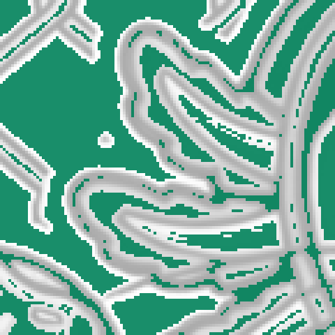
flat del clásicofloat. La zona de sombra rosa, entre el contorno oscuro y el rosa vivo, está casi toda en magenta porque es un degradado: recuerda esto para el capítulo 6. La última imagen es la idea más próxima del motor clásico: todo lo que está lejos de un borde.

float. El resto, en blanco, es fondo.Brillos
Un brillo es un píxel sólido cuya luminosidad supera en al menos 10 a la media de los 21 × 21 píxeles de alrededor. Es una definición del propietario.


highlight_maskdiver con más brillos (3,1 % de la imagen). Marca los brillos de verdad, y también el lado claro de todo contorno oscuro, ya que allí la media baja: la máscara es generosa. La plaza reservada exige además estar lejos de la paleta.6. Asignación: la historia de ASSIGN_WINDOW
Con paleta y máscaras, falta dar un color a cada píxel. Un sólido elige el color más cercano. Un píxel de transición, no: elige solo entre colores que existan en forma sólida dentro de una ventana. Esa ventana es ASSIGN_WINDOW.
Acto I: el halo
Entre un contorno oscuro y un relleno verde azulado, la mezcla pasa por un verde oscuro. Si la paleta tiene un verde oscuro en otra parte, el píxel de borde lo coge. Resultado: cada contorno se rodea de un anillo de un tercer color. Eso es un halo.


Acto II: la sombra que se volvió negra
Al principio el alcance era 3: una ventana de 7 × 7. Evitaba el halo. Pero en las branquias de float apareció un defecto: partes de sombra se volvían negras.


float en el SVG final con cada alcance. Con 3, grandes trozos de la sombra rosa son del color del contorno. Con 6 casi desaparecen. Con 9 queda algún resto pequeño. Con 12 no hay mejora obvia.El motivo se ve eligiendo un solo píxel. La sombra es un degradado, así que sus píxeles son de transición. Si el degradado es más ancho que la ventana, no hay rosa sólido a la vista. Solo queda el contorno.


Colores sólidos al alcance de ese píxel:
Con alcance 3
Con alcance 9


| Imagen | 3 | 6 | 9 | 12 |
|---|---|---|---|---|
axolotl | 288 | 92 | 89 | 88 |
diver | 172 | 72 | 64 | 39 |
leaves | 668 | 110 | 74 | 69 |
chef | 8 | 3 | 3 | 3 |
ghost | 0 | 0 | 0 | 0 |
watchmaker | 540 | 28 | 23 | 19 |
float | 1.125 | 312 | 164 | 138 |
sunset | 0 | 0 | 0 | 0 |
principito | 452 | 355 | 349 | 378 |
| Total | 3.253 | 972 | 766 | 734 |
Qué cuesta
| Alcance | KB total | Trazados | Nodos | Segundos total | Pico MB |
|---|---|---|---|---|---|
| 3 | 2926 | 3745 | 50639 | 35,6 | 943 |
| 6 | 2968 | 4038 | 51000 | 36,0 | 944 |
| 9 | 3058 | 4333 | 52500 | 35,8 | 943 |
| 12 | 3109 | 4497 | 53302 | 36,4 | 944 |
| KB por imagen | 3 | 6 | 9 | 12 |
|---|---|---|---|---|
axolotl | 253 | 245 | 251 | 250 |
diver | 412 | 445 | 491 | 511 |
leaves | 430 | 442 | 452 | 462 |
chef | 102 | 101 | 98 | 101 |
ghost | 116 | 119 | 119 | 119 |
watchmaker | 638 | 690 | 714 | 731 |
float | 470 | 433 | 444 | 440 |
sunset | 268 | 255 | 247 | 250 |
principito | 237 | 238 | 242 | 245 |
| Total | 2926 | 2968 | 3058 | 3109 |
axolotl, chef, float, sunset. De 9 a 12 crecen 6 de 9.El propietario eligió 9 a ojo, mirando la batería. No hay un óptimo calculado. Lo que dicen los números: 6, 9 y 12 no cuestan tiempo; casi toda la mejora llega antes del 9, y el SVG sigue creciendo después. 6 también era defendible.
Acto III: el agujero en la cúpula
Alcance 9 trajo su propio defecto. El fondo también es un color al que se puede llegar. Un brillo muy claro tras un contorno fino ve el fondo por encima de la línea, a 9 px, y se parece más a él que a nada. El brillo se convierte en un agujero.


--colors 8, sobre magenta para que se vea lo transparente. Con el fondo a alcance 9, el brillo de la cúpula es un agujero de 103 px. La corrección es BACKGROUND_WINDOW = 3: los colores se ven a 9, el fondo solo a 3. Se ha reproducido cambiando esa constante.La lección de los tres actos: una ventana no era una sola decisión. Eran dos preguntas distintas, y cada una necesita su distancia.
7. Limpieza
Tras asignar queda basura. Cada regla de limpieza responde a un tipo de basura, y cada una puede equivocarse. Aquí van con sus aciertos y, cuando los hay, sus errores.
El voto de los vecinos
Dentro de assign, cada píxel paga un coste de hasta 5 ΔE por discrepar de sus 3 × 3 vecinos. Las motas entre tonos parecidos caen. Un punto oscuro aislado, que dista mucho de todo, se queda.


assign con rounds=0 y con rounds=3, en el ajolote. Fíjate en los bordes: el escalonado de tonos parecidos se limpia, y el punto oscuro sigue. Afecta a 816 píxeles.Franjas: dissolve_fringes
Una banda fina cuyo color queda entre los de sus dos lados no es un color: es un borde. Cada píxel de la banda se va al lado más cercano. Una línea fina de verdad se salva: su color no queda entre sus vecinos, o tiene el mismo a ambos lados.


float. Antes, un anillo verde oscuro rodea cada contorno de la caja. Se disuelve. En la imagen, 13.263 píxeles.Aquí hay un truco: el motor pasa dos veces. Las bandas halladas en la primera se añaden a la máscara de transición, y dejan de votar en la paleta de la segunda.
Primera pasada, 18 colores
Segunda pasada, 19 colores
float en cada pasada.Doblar el mapa: refine_double


refine_doubleMotas: absorb_specks
Una pieza de menos de 12 px de la fuente pasa al vecino de color más cercano. Si destaca (ΔE ≥ 25), solo se absorbe por debajo de 4 px. Y una pieza de menos de 60 px que casi no difiere (ΔE < 16) también se va, porque es textura.


diver, donde más cambia. Aquí la regla hace daño: cada tramo del alambre en cruz es una pieza pequeña y poco contrastada, así que los tramos se absorben. La cruz queda cortada.Multitudes: dissolve_speckle
La idea: una mota es textura si es poco contrastada (ΔE < 32), pequeña (≤ 40 px), con un solo vecino y rodeada de otras así (más de 4 a 30 px). El caso que motivó la regla era roca moteada y puntos en una sombra.


watchmaker, 17 islas. Esto es un fallo. Esas «islas» son las puntadas del bolsillo, que están en la fuente. Una costura es justo una multitud de marcas pequeñas y poco contrastadas.


float, 5 islas: el motor borra varios granos de sal que la fuente tiene. Islas disueltas en esta versión: axolotl 0, diver 0, leaves 3, chef 0, ghost 0, watchmaker 17, float 5, sunset 0, principito 0. En los dos casos mirados de cerca, lo que se va es detalle real. La regla merece revisarse.Trozos a la deriva: drop_floating_pale
El motor quita el fondo blanco y, a veces, deja hilos sueltos de la línea de la pegatina flotando en el vacío. Sobre blanco no se ven; sobre color, sí.


leaves. Una pieza se va si solo toca fondo, si dista ≤ 26 de él y si es fina. Se van 11 piezas. Es una limpieza con coste: la pegatina tenía de verdad ese borde, y ahora no está.8. Geometría: el corazón del cambio
Si hay un cambio que define al motor nuevo, es este.
El clásico traza cada capa por separado. El contorno del rosa lo calcula potrace mirando solo el rosa, y el del negro, mirando solo el negro. Son dos cálculos de la misma frontera, y no tienen por qué coincidir. Para que no se vean rendijas, cada capa inferior se extiende por debajo de las superiores.
El nuevo calcula la frontera misma, y las dos regiones la usan.
El mapa plano
Las paredes pasan por las grietas entre píxeles de distinta clase. Un punto donde se tocan tres o más grietas es un cruce. Un tramo de pared entre dos cruces es un arco. Las regiones son vueltas de arcos.


planar.build.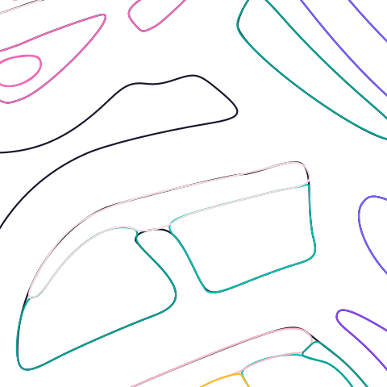
cutout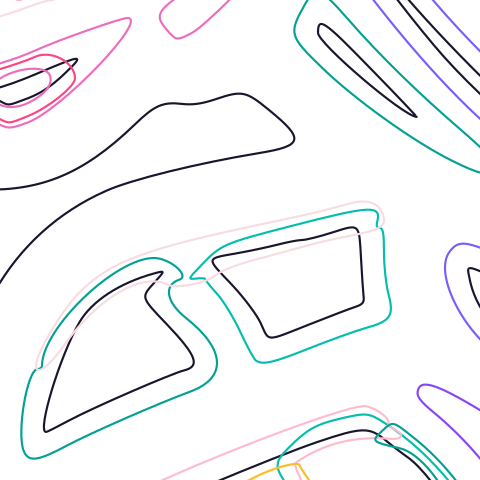
stacked
cutoutstacked clásico se ven dobles: cada capa sigue por debajo de las de arriba. Son curvas que el SVG contiene aunque no se vean, y una máquina las recibiría.¿Se comparten de verdad? Se puede medir en el archivo: contar cuántas veces aparece cada segmento en los rellenos, con sus coordenadas exactas.
| Imagen | Clásico cutout | Nuevo cutout | |||
|---|---|---|---|---|---|
| Segmentos | Exactos en dos sitios | Segmentos | Exactos en dos sitios | En más de dos | |
axolotl | 5464 | 28,8 % | 2351 | 80,0 % | 0 |
diver | 8786 | 25,3 % | 4254 | 93,3 % | 0 |
leaves | 13189 | 15,1 % | 4051 | 94,9 % | 0 |
chef | 2329 | 24,9 % | 990 | 73,7 % | 0 |
ghost | 648 | 2,9 % | 1016 | 83,6 % | 0 |
watchmaker | 10936 | 27,4 % | 6314 | 95,2 % | 0 |
float | 8545 | 23,6 % | 4007 | 96,3 % | 0 |
sunset | 12988 | 57,4 % | 2177 | 98,7 % | 0 |
principito | 9882 | 37,7 % | 2066 | 98,6 % | 0 |
De grieta a curva
Una pared recién salida del mapa es una escalera. Cuatro pasos la convierten en curva.


_subpixel: donde el color cruza la mitad
smooth_chains: suavizar sin encoger
fit_chains: cúbicas y nodosG(x) + G(x − G(x)); y un ajuste de Bézier a 0,45 px, 0,6 en paredes de poco contraste.En un cruce, cada pared se acaba en la misma coordenada: la media de los primeros puntos de las que llegan. Y si una pared cruza recto, las dos mitades comparten tangente, para que no aparezca un codo.
Esquinas
Suavizar es bueno salvo donde el dibujo tiene una esquina de verdad. Las esquinas se buscan a tres escalas de suavizado (0,8; 1,5 y 2,4 px). Una escalera solo gira a la escala fina. Una curva amplia solo llega a un ángulo alto a la gruesa. Una esquina auténtica gira en las tres.
Luego hay un segundo filtro. Debe girar de golpe (al menos 60° en menos de 2,6 px) o ser una punta (de 110° a 165° en menos de 5 px). El final redondeado de un trazo gira casi 180° y no pasa. Es la regla del propietario: suave, salvo un corte abrupto.


find_corners. Magenta: las que quedan. En el pelo del Principito se conservan puntas. En las rayitas del ovni se descartan los extremos redondeados, como debe ser. En la estrella del ajolote se descartan las cuatro puntas, y quedan muy agudas pero redondeadas: mira la figura 1.2. En todo el ajolote quedan 87 de 268; en el Principito, 130 de 271.Huecos, trazos trampa y líneas finas
Con dos regiones que comparten pared exacta, ¿queda algún hueco? En geometría, no. Al dibujar, sí. Un renderizador con antialiasing pinta el borde de A al 50 % y encima el de B al 50 %. El resultado cubre el 75 %: por ahí se ve el fondo. Es una línea fina (hairline), y no depende de que la geometría sea perfecta.
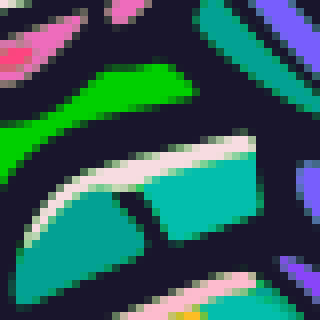
cutout
cutout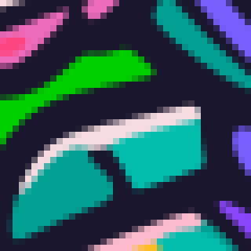
stacked
stackedcutout nuevo se aprecia la costura entre los dos verdes azulados: tener una sola curva no la elimina. En stacked desaparece. El clásico no tiene ahí esa pared, y por eso no se ve la suya en esta ventana; la tabla siguiente muestra que deja tantas como el nuevo. Su mancha verde central es transparencia: el clásico quita ese blanco encerrado y el nuevo lo pinta.| Imagen | Clásico stacked | Clásico cutout | Nuevo stacked | Nuevo cutout |
|---|---|---|---|---|
axolotl | 92 | 28.740 | 456 | 24.897 |
diver | 1.197 | 32.405 | 1.539 | 30.376 |
leaves | 39 | 45.580 | 883 | 39.365 |
chef | 185 | 10.881 | 108 | 10.000 |
ghost | 48 | 386 | 225 | 15.402 |
watchmaker | 324 | 40.030 | 2.060 | 40.976 |
float | 162 | 37.899 | 580 | 46.049 |
sunset | 0 | 41.148 | 428 | 35.588 |
principito | 0 | 42.200 | 198 | 35.701 |
rsvg-convert a tamaño real y tools/engine/measure.py. En cutout son del mismo orden, salvo ghost, que en el clásico tiene solo 2 colores. En stacked, el clásico deja menos en 8 de 9: su solape cubre más.El clásico lo soluciona con su solape de 8 px de trabajo, unos 2 de la fuente. Es sencillo y robusto, pero mete mucha geometría oculta.

cutout
stackedEl nuevo no toca los rellenos. Después de los rellenos de un color, traza con ese mismo color las paredes que tiene con las capas superiores. Las capas superiores aterrizan sobre su propio color, sin dejar nada debajo por ver. Es un trazo trampa (trap).


stacked pesa bastante más que su cutout. Cada trazo lleva además data-shapes, con la forma dueña de cada pared, para que una herramienta de recolorear no tenga que deducirla de la geometría.Apilado o recortado
stacked escribe rellenos y trampas, y ordena las capas por grosor: lo grueso abajo, lo fino arriba, para que las paredes de lo fino queden exactas. cutout solo escribe rellenos, y ordena por área. Sirve para plotter y serigrafía, y se le notarán costuras en pantalla. El clásico ordena siempre por área, lo mayor abajo.
9. Comparación final
Arrastra el deslizador. Cambia la imagen o lo que hay en cada lado.
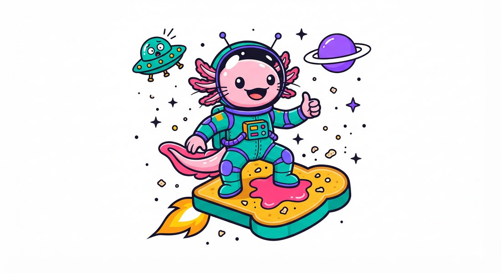
rsvg-convert sobre blanco, con 1100 px como máximo. Los SVG originales también están enlazados, para ampliarlos sin límite en el navegador.| Imagen clásico nuevo | Colores | Trazados | Nodos | Nodos /100 px | Giros > 30° /1000 px | KB | ΔE medio | ΔE p95 |
|---|---|---|---|---|---|---|---|---|
axolotl | 16 16 | 405 377 | 7271 4232 | 12,1 7,8 | 1,0 3,3 | 302 251 | 1,90 1,80 | 10,7 10,0 |
diver | 16 20 | 612 909 | 11346 8223 | 17,5 12,4 | 2,1 2,8 | 467 491 | 2,60 1,98 | 15,2 11,1 |
leaves | 16 17 | 1145 536 | 16135 7895 | 18,2 9,9 | 1,4 7,3 | 676 452 | 4,11 3,40 | 19,8 14,5 |
chef | 13 16 | 135 113 | 3214 1720 | 12,1 7,1 | 1,0 3,0 | 132 98 | 0,75 0,70 | 3,5 3,5 |
ghost | 2 8 | 37 137 | 663 1865 | 11,8 5,6 | 0,0 0,1 | 28 119 | 0,92 0,40 | 4,9 2,1 |
watchmaker | 16 19 | 869 1286 | 13033 12327 | 17,5 13,8 | 1,4 3,9 | 546 714 | 2,99 2,65 | 12,9 10,8 |
float | 16 19 | 645 502 | 10616 7864 | 13,1 8,4 | 0,8 2,3 | 445 444 | 3,65 3,15 | 18,8 15,5 |
sunset | 14 16 | 754 256 | 18321 4298 | 23,1 6,0 | 2,6 0,5 | 750 247 | 8,95 5,46 | 19,3 12,8 |
principito | 16 19 | 749 217 | 13110 4076 | 16,0 5,8 | 1,5 3,8 | 545 242 | 2,71 1,72 | 13,9 8,0 |
stacked, medidos con tools/engine/measure.py en el SVG escrito. Los giros en cruces no cuentan. El ΔE medio es menor en 9 de 9, pero una media ya ha engañado aquí antes: no dice nada de los defectos del capítulo 10.Tiempo y memoria
cl: clásico; nu: nuevo. Las etapas no son iguales entre motores y se agrupan: en el clásico, «Preparar» incluye lo no atribuido de segment. Pasa el puntero sobre un tramo para ver el valor.| Imagen | Clásico, s | Nuevo, s | Clásico, MB | Nuevo, MB |
|---|---|---|---|---|
axolotl | 18,4 | 3,8 | 2761 | 633 |
diver | 20,6 | 4,4 | 2637 | 672 |
leaves | 23,1 | 4,0 | 2630 | 693 |
chef | 12,5 | 3,3 | 2595 | 594 |
ghost | 7,0 | 2,4 | 2678 | 568 |
watchmaker | 18,9 | 4,4 | 2605 | 727 |
float | 22,7 | 4,1 | 2729 | 818 |
sunset | 20,8 | 3,4 | 2689 | 613 |
principito | 32,7 | 5,4 | 3886 | 943 |
| Nuevo: etapa | s de media |
|---|---|
classify | 0,07 |
denoise | 0,29 |
antialiasing | 0,32 |
background | 0,02 |
palette | 0,17 |
assign | 0,77 |
fringes | 0,19 |
refine | 0,56 |
specks | 0,97 |
regions | 0,16 |
planar_map | 0,05 |
curves | 0,26 |
svg | 0,07 |
| Clásico: etapa | s de media |
|---|---|
blur | 1,43 |
groups | 0,25 |
unexplained | 0,78 |
nearest | 0,75 |
split | 2,31 |
fringes | 1,15 |
specks | 1,24 |
smooth | 0,46 |
trace | 6,70 |
other | 4,57 |
10. Lo que sigue peor o sin verificar
Un motor nuevo no es un motor mejor en todo. Esto es lo que sigue peor en este commit, comprobado de nuevo punto por punto.
Giros bruscos
En 8 de 9 imágenes hay más giros de más de 30° por 1000 px: axolotl 1,0 → 3,3; diver 2,1 → 2,8; leaves 1,4 → 7,3; chef 1,0 → 3,0; ghost 0,0 → 0,1; watchmaker 1,4 → 3,9; float 0,8 → 2,3; principito 1,5 → 3,8. Parte es esperable, porque potrace redondea casi todo y el solape oculta dónde se tocan las capas. Parte son esquinas de verdad. Pero algunas son puntas donde la fuente es redonda, y esto pide ojo, no fórmula.
Más colores
8 de 9 imágenes usan más colores: diver 16 → 20; leaves 16 → 17; chef 13 → 16; ghost 2 → 8; watchmaker 16 → 19; float 16 → 19; sunset 14 → 16; principito 16 → 19. El nuevo llega a 20, por encima de las 16 que el clásico tiene como tope automático. Nada en el código busca menos colores una vez cubierto lo que se ve.
SVG más grande
En 3 de 9: diver 467 → 491 KB; ghost 28 → 119 KB; watchmaker 546 → 714 KB. Las trampas pesan. El caso de ghost se explica por sus 8 colores frente a 2.
Defectos a la vista

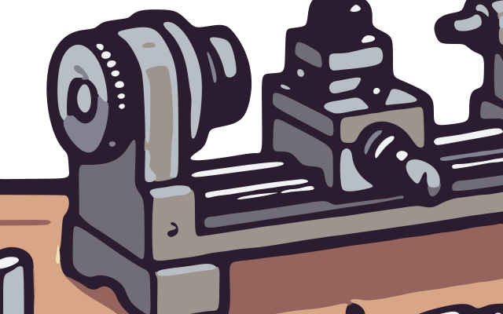
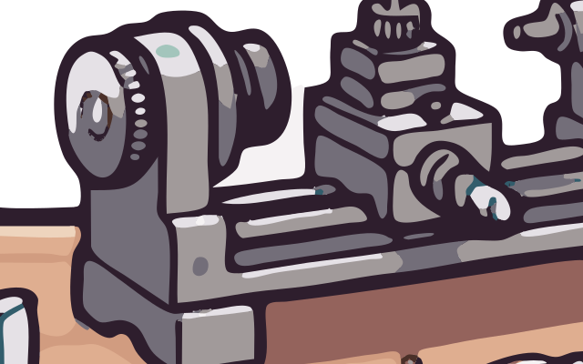
watchmaker, el torno. El nuevo sigue mejor los grises del metal, pero añade motas verde azuladas y reflejos blancos exagerados en el husillo y la polea. El clásico es más oscuro y simple, y sin esas motas. El defecto anotado se mantiene.
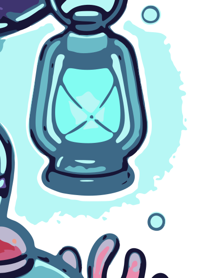

diver, el farol. El halo es de bandas suaves en el nuevo, mejor que la mancha desgarrada del clásico. Pero el interior es más apagado que el del clásico y el cuerpo, más claro y manchado. También se mantiene.
sunset. Ninguno conserva las dos antenas: el clásico mantiene el tallo izquierdo y el nuevo casi solo las bolas. El nuevo convierte el degradado de la cara en bandas muy visibles; el clásico la deja más uniforme, con bordes desgarrados. Ninguno es bueno aquí, y el defecto anotado se mantiene.
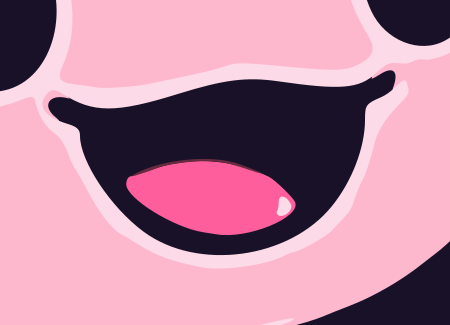


float (arriba), el nuevo además añade una mota naranja.

ghost. Aquí el nuevo es claramente mejor: el clásico solo tiene 2 colores y pierde las branquias. Pero el contorno pálido es irregular de cerca, ligeramente anguloso.Pegatinas y huecos
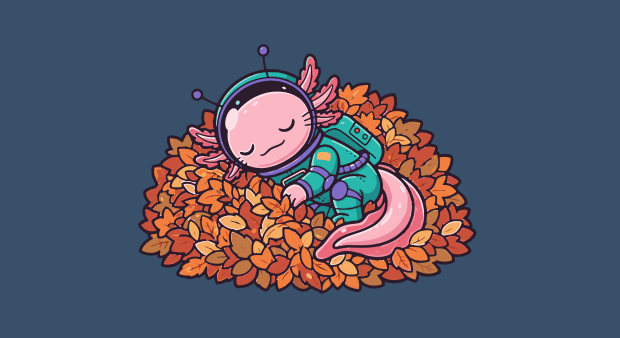
leaves, clásico
leaves, nuevo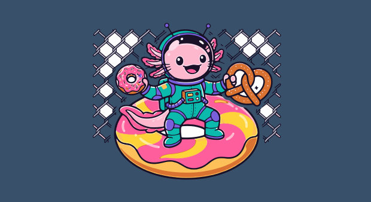
float, clásico
float, nuevoleaves pierde la pegatina en los dos. En float, el nuevo deja una pegatina blanca entera con los huecos de la valla opacos; el clásico deja algunos huecos transparentes y otros no. battery/README.md dice que esos huecos deben volverse transparentes: el nuevo no lo hace sin --also-transparent, aunque el CLI avisa.--also-transparent ya no se lleva lo que se funde
En el clásico, un color pequeño fundido con el pedido desaparece con él. Eso son las «marcas finas que se funden» de la ayuda del CLI. En el nuevo, adapter.py solo quita clases a ΔE ≤ 8 del color pedido. El texto de ayuda sigue prometiendo lo anterior. Esto sale de leer el código; las figuras de abajo muestran otra consecuencia, no ese caso aislado.

#FDFDFD#FBFBFB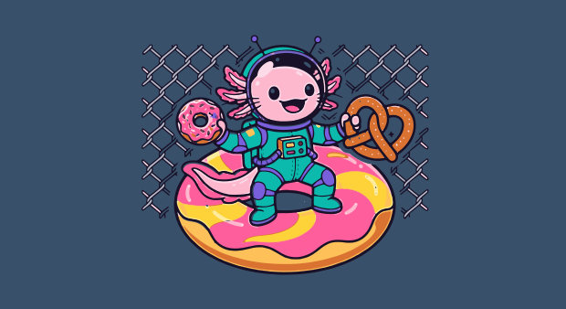
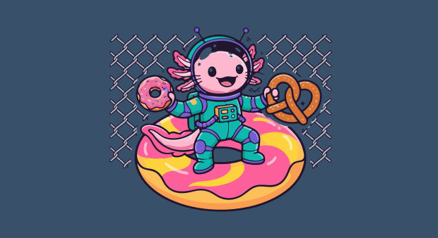
Agujeros de 1 o 2 píxeles
El CLI cuenta holes_in_artwork con su propio rasterizador, y el nuevo motor marca algunos. Se sabe de dos: float cerca de (347, 200) y leaves cerca de (816, 454). Los comprobé con otros dos renderizadores.
| Imagen | x, y | holes_in_artwork | Alfa, unpixel.render | Alfa, rsvg-convert | Alfa, Chromium |
|---|---|---|---|---|---|
float | 347, 200 | 2 | 0 | 255 | 255 |
leaves | 816, 454 | 2 | 0 | 255 | 255 |


unpixel.render
rsvg-convert

unpixel.render
rsvg-convertrsvg-convert y Chromium no lo muestran en esos puntos. Eso indica que estos dos no son agujeros en lo que ve un usuario en esos renderizadores. No establezco la causa dentro del rasterizador, y no he comprobado otros puntos ni otros tamaños a este nivel.Puntos translúcidos en cruces, en el navegador
| Imagen | Clásico stacked | Nuevo stacked | Nuevo cutout |
|---|---|---|---|
axolotl | 69 / 0 / 57 | 72 / 73 / 47 | 7.802 / 23.702 / 1.654 |
diver | 1.042 / 212 / 226 | 38 / 394 / 30 | 9.963 / 30.550 / 2.389 |
leaves | 29 / 0 / 17 | 29 / 145 / 18 | 12.353 / 37.368 / 3.039 |
chef | 150 / 7 / 93 | 13 / 34 / 32 | 3.148 / 10.047 / 675 |
ghost | 31 / 2 / 21 | 21 / 18 / 15 | 4.891 / 15.119 / 1.000 |
watchmaker | 251 / 9 / 72 | 110 / 302 / 57 | 12.458 / 40.124 / 3.170 |
float | 165 / 0 / 186 | 12 / 139 / 2 | 13.786 / 42.428 / 3.677 |
sunset | 0 / 0 / 0 | 8 / 104 / 1 | 11.699 / 35.201 / 2.894 |
principito | 0 / 0 / 0 | 8 / 31 / 2 | 11.100 / 34.523 / 2.852 |
tools/book/browser_counts.py). A 1× el nuevo stacked suele dejar menos o parecido. A 3× deja más que el clásico en todas: el solape del clásico los tapa. Parte de lo contado son entrantes reales del fondo, no huecos: no están separados.Imágenes muy grandes
Con leaves ampliada a 24 megapíxeles, el clásico tardó 36,3 s con un pico de 3833 MB, y el nuevo 31,4 s con 4862 MB. La ventaja de velocidad se reduce mucho y usa más memoria. Sobre 12 megapíxeles el nuevo trabaja con la imagen reducida, y el detalle más fino se pierde.
Sin probar
- Illustrator, Inkscape, RIP de impresión: nada. Solo
rsvg-converty Chromium. - Un plotter o una impresora reales: nada. Todo lo dicho de ellos en este libro es razonamiento sobre los trazados.
- Los trazos trampa son trazos. En un editor con «escalar trazos» desactivado, cambiarían de ancho. Un cortador debe usar
cutout. - Las medidas son de una sola pasada, en una máquina que no estaba reservada.
- De las notas de desarrollo no he vuelto a mirar en este commit: los puentes oscuros sobre correas finas del ajolote, las rayas rotas del catalejo ni las manchas de la cobertura del donut. Quizá sigan ahí.
Glosario
- Antialiasing
- Píxeles de borde que mezclan los dos colores vecinos para que el borde parezca suave.
- Arco
- Tramo de pared entre dos cruces, o una vuelta cerrada.
- Bézier cúbica
- Curva definida por dos nodos y dos manejadores. Es la curva que escriben ambos motores.
- CIE76, ΔE
- Distancia en línea recta entre dos colores en Lab. Es simple e imperfecta.
- Clase
- Etiqueta de color de un píxel: el índice de la paleta o el fondo.
- Croma
- La intensidad de un color: lo lejos que está del gris. En Lab,
hypot(a, b). - Cruce
- Punto donde se encuentran tres o más paredes, o donde una pared sale de la imagen.
- Grieta
- El lado compartido entre dos píxeles vecinos de distinta clase.
- Línea fina (hairline)
- Línea tenue que un renderizador deja entre dos formas contiguas, por su antialiasing.
- Máscara
- Imagen de sí o no sobre cada píxel.
- Mapa plano
- Representación de las regiones como paredes y cruces compartidos.
- Nodo
- Punto por donde pasa una curva, en el que termina un segmento y empieza otro.
- Punto más lejano
- Forma de elegir colores: siempre el más alejado de los ya elegidos.
- Sólido
- Píxel que no es transición ni fondo. Los únicos que votan en la paleta.
- Stacked, cutout
- Capas que se solapan para que no se vean costuras, frente a capas que solo se tocan.
- Transición
- Píxel que se explica como mezcla de los que tiene a sus lados.
- Trazo trampa (trap)
- Trazo del color inferior sobre una pared, para que el borde del color superior no deje ver el fondo.